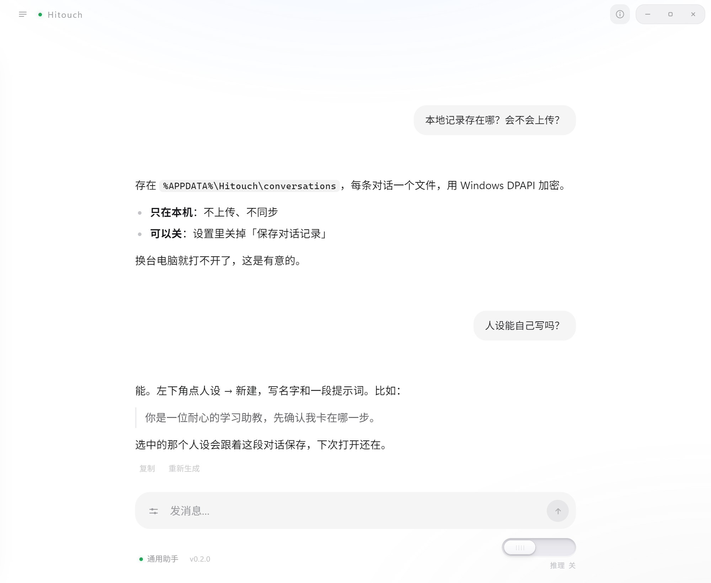

填入自己的 API Key 就能对话，不注册、不登录。
你的消息直接发往 DeepSeek，回答直接回到窗口里 —— 中间没有账号，没有同步，没有一层转发。

Key 只存在本机，不上传服务器。不用注册账号，也没有“登录”这一步。
会话、人设、记忆都是本地文件，用 Windows DPAPI 加密；不需要时可以直接清空。
没有遥测，没有后台常驻联网，也没有弹窗。打开就是一张干净的对话窗。
流式回答、随时停止与重新生成；内置通用助手、学习助教、编程搭子、翻译四套人设，也能自己写； 可选联网搜索（默认关，回答里会标来源）；可选本地记忆（默认关）；Markdown 表格与代码高亮； 任意对话一键导出成 Markdown 文件。
这个版本还没有代码签名，所以 Windows 可能提示“Windows 已保护你的电脑 / 未知发布者”。 点更多信息 → 仍要运行即可；安装包在安装时也会请求管理员权限，用于写入程序目录。
ff9ab1712a48addb5967b499c865f73a8f7c156d33687f64c923ff13c2739967 Hitouch-0.2.0-setup.exe 9bfd7c47e27735337c349b9a8326196f07f57f37f4e8b13aa4e7b631bcd6c30a Hitouch-0.2.0-portable.exe
在文件所在目录执行 certutil -hashfile Hitouch-0.2.0-setup.exe SHA256 对比，一致即未被篡改。
Windows 10 1809 及以上 / Windows 11，64 位。安装包约 82 MB（含 Electron 运行时），属于正常体积。